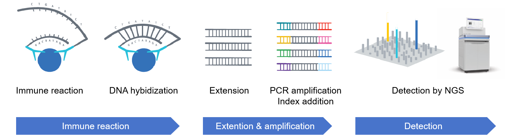
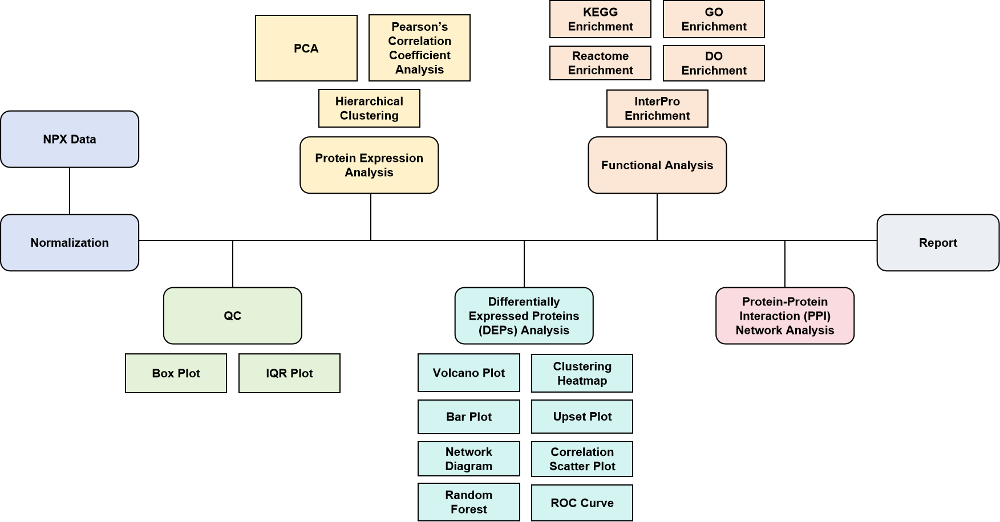

Olink Analysis Report
| Contract ID | X2025Test |
| Contract Name | TEST |
| Batch ID | X2025Test-Z01-F001 |
| Report Time | 2025-08-05 |
| Reminder |
Project Profile
Olink proteomics technology was used to identify protein biomarkers in this project. Systematic bioinformatic analyses, including protein quantification, enrichment analysis, and protein-protein interaction analysis, were performed. The experimental methodology is described in details in Appendix 5.2. Below shows the project specifications.
Table 1 Sample Grouping Information
| SampleID | Group_Name1 | Group_Name2 | Group_Name3 |
|---|---|---|---|
| concordance_A1 | NA | NA | NA |
| concordance_A2 | NA | NA | NA |
| concordance_A3 | NA | NA | NA |
| concordance_A4 | NA | NA | NA |
| concordance_A5 | NA | NA | NA |
| concordance_A6 | NA | NA | NA |
| concordance_B1 | NA | NA | NA |
| concordance_B2 | NA | NA | NA |
| concordance_B3 | NA | NA | NA |
| concordance_B4 | NA | NA | NA |
| concordance_B5 | NA | NA | NA |
| concordance_B6 | NA | NA | NA |
| concordance_C1 | C | NA | NA |
| concordance_C2 | C | NA | NA |
| concordance_C3 | C | NA | NA |
| concordance_C4 | C | NA | NA |
| concordance_C5 | C | NA | NA |
| concordance_C6 | C | NA | NA |
| concordance_D1 | D | NA | NA |
| concordance_D2 | D | NA | NA |
| concordance_D3 | D | NA | NA |
| concordance_D4 | D | NA | NA |
| concordance_D5 | D | NA | NA |
| concordance_D6 | D | NA | NA |
| concordance_E1 | NA | E | NA |
| concordance_E2 | NA | E | NA |
| concordance_E3 | NA | E | NA |
| concordance_E4 | NA | E | NA |
| concordance_E5 | NA | E | NA |
| concordance_E6 | NA | E | NA |
| concordance_F1 | NA | F | NA |
| concordance_F2 | NA | F | NA |
| concordance_F3 | NA | F | NA |
| concordance_F4 | NA | F | NA |
| concordance_F5 | NA | F | NA |
| concordance_F6 | NA | F | NA |
| concordance_G1 | NA | NA | G |
| concordance_G2 | NA | NA | G |
| concordance_G3 | NA | NA | G |
| concordance_G4 | NA | NA | G |
| concordance_G5 | NA | NA | G |
| concordance_G6 | NA | NA | G |
| concordance_H1 | NA | NA | H |
| concordance_H2 | NA | NA | H |
| concordance_H3 | NA | NA | H |
| concordance_H4 | NA | NA | H |
| concordance_H5 | NA | NA | H |
| concordance_H6 | NA | NA | H |
| C_A12_Qc1 | SAMPLE_CONTROL | SAMPLE_CONTROL | SAMPLE_CONTROL |
| C_B12_Qc1 | SAMPLE_CONTROL | SAMPLE_CONTROL | SAMPLE_CONTROL |
| N_C12_Qc1 | SAMPLE_CONTROL | SAMPLE_CONTROL | SAMPLE_CONTROL |
| N_D12_Qc1 | PLATE_CONTROL | PLATE_CONTROL | PLATE_CONTROL |
| N_E12_Qc1 | PLATE_CONTROL | PLATE_CONTROL | PLATE_CONTROL |
| P_F12_Qc1 | PLATE_CONTROL | PLATE_CONTROL | PLATE_CONTROL |
| S_G11_Qc1 | NEGATIVE_CONTROL | NEGATIVE_CONTROL | NEGATIVE_CONTROL |
| P_G12_Qc1 | PLATE_CONTROL | PLATE_CONTROL | NEGATIVE_CONTROL |
| S_H11_Qc1 | NEGATIVE_CONTROL | NEGATIVE_CONTROL | NEGATIVE_CONTROL |
| P_H12_Qc1 | PLATE_CONTROL | PLATE_CONTROL | NEGATIVE_CONTROL |
- SampleID: Sample name.
- Group_Name: Group name assigned for samples within each comparison pair. "NA" indicates samples are excluded from this comparison pair.
1 Introduction
Olink’s Proximity Extension Assay (PEA) technology uniquely combines specificity and scalability to enable high-throughput, multiplex protein biomarker analysis. PEA technology merges an antibody-based immunoassay with the powerful properties of next generation sequencing (NGS, Figure 1.1). This provides a scalable multiplex protein biomarker platform with exceptional specificity and sensitivity while using minimal sample volumes.
Olink panels explore up to 5,400 proteins with high specificity, transparent data, and the flexibility to answer any research question. Olink Explore HT measure 5,400+ proteins with proven specificity to gain an understanding of disease at the protein level. Olink Reveal is designed to measure over 1,000 proteins for broad coverage of the proteome and deep profiling of inflammation processes for disease research. Olink PEA technology enables proteomic profiling, biomarker discovery and mechanisms insight in diverse clinical researches.

Figure 1.1 Olink Proximity Extension Assay Workflow
2 Library Construction and Sequencing
Samples and controls are transferred to a 96-well plate for overnight incubation, during which antibodies bind to their target protein. Oligonucleotides attached to antibodies brought into proximity hybridize, followed by extension and PCR amplification. Unique sample indexes are added to every sample in the amplification step, to enable pooling into a library. The library is purified sequenced (Figure 1.1).
3 Bioinformatics Analysis Pipeline

Figure 3.1 Olink Analysis Pipeline
4 Analysis Results
4.1 Data Normalization and Quality Control
4.1.1 NPX Distribution
NPX, Normalized Protein eXpression, is Olink’s arbitrary unit which is in Log2 scale. After sequencing, raw data were converted to counts and then normalized into NPX values. NPX values were futher used to identify differentially expressed proteins. In general, a higher NPX value refer to a higher protein abundance.
NPX should be used for relative quantification only. This means:
- NPX values are ONLY comparable for the same protein across samples within a SAME run.
- Bridging samples are REQUIRED for cross-run NPX comparisons.
The box plot (Figure 4.1) shows the NPX distributions for all samples. The boxplot elements represent: median (central line), first quartile (lower box edge), third quartile (upper box edge), with whiskers showing the data range (minimum to maximum values).
Figure 4.1 Sample NPX Distribution Box Plot
X-axis: Sample ID; Y-axis: NPX value. Red: QC warning samples; Blue: QC pass samples.
4.1.2 QC_IQR
The interquartile range (IQR) analysis was performed to evaluate the deviation of samples. In Figure 4.2, samples within the dashed boundary show high uniformity/low deviation, while outliner dots indicate high deviations. However, outliner samples could be included in the downstream analysis if protein concentrations are within linear ranges.
Figure 4.2 Sample IQR Plot
X-axis: Sample ID; Y-axis: NPX value. Red: QC warning samples; Blue: QC pass samples.
4.2 Protein Expression Analysis
The normalized NPX of all samples are used for the following protein expression analysis.
4.2.1 Principal Component Analysis (PCA)
PCA plot was used to assess inter-group and intra-group differences (Figure 4.3). Dots labelled as NEGATIVE_CONTROL, PLATE_CONTROL, and SAMPLE_CONTROL typically form distinct clusters as shown in Figure 4.3.
Figure 4.3 PCA Plot
4.2.2 Pearson’s Correlation Coefficient Analysis
Pearson’s correlation coefficient analysis was performed on all sample. The Pearson correlation coefficient (r) is a number between –1 and 1 that measures the relationship between two samples (Figure 4.4). A value of 0~1 indicates a positive linear correlation, -1~0 indicates a negative linear correlation, and 0 indicates no linear correlation.

Figure 4.4 Pearson's Correlation Coefficient Matrix for All Samples
4.2.3 Hierarchical Clustering
Heatmaps was used to visualize clustered expression patterns in all samples. Clustered proteins indicate similar expression patterns across all samples (Figure 4.5).
Figure 4.5 Clustering Heatmap
4.3 Differentially Expressed Proteins (DEPs) Analysis
T-tests or ANOVA was used to identify DEPs. T-tests are used to compare between two groups of samples (e.g. healthy vs diseased). ANOVA (Analaysis of Variance) is used to compare across two or more groups when covariates is included. Statistical significance was defined as an adjusted p-value < 0.05 (default threshold).
4.3.1 DEP Results
Top 20 DEPs from the first comparison pair were demonstrated in Table 4.1.
Table 4.1 Demonstration of Top 20 DEPs
| Assay | OlinkID | UniProt | Panel | estimate | C | D | statistic | p.value | parameter | conf.low | conf.high | method | alternative | Adjusted_pval | Threshold |
|---|---|---|---|---|---|---|---|---|---|---|---|---|---|---|---|
| GSTP1 | GSTP1_OID50176 | P09211 | Reveal | -1.40505520254373 | -0.663668505847454 | 0.74138669669628 | -4.0007490756635 | 0.00251551564664098 | 9.99955292913672 | -2.18757792502279 | -0.622532480064675 | Welch Two Sample t-test | two.sided | 0.383316061542899 | Significant |
| CAMK4 | CAMK4_OID50111 | Q16566 | Reveal | -1.08237099647522 | -0.773040115833282 | 0.309330880641938 | -4.30357423349514 | 0.00254292300024749 | 8.08093534877911 | -1.66133332710612 | -0.503408665844319 | Welch Two Sample t-test | two.sided | 0.383316061542899 | Significant |
| CYB5R2 | CYB5R2_OID50535 | Q6BCY4 | Reveal | -1.86000775918365 | -0.869730979204178 | 0.990276779979469 | -4.11867227217317 | 0.00258615127803824 | 9.02759316604407 | -2.88113058095267 | -0.838884937414626 | Welch Two Sample t-test | two.sided | 0.383316061542899 | Significant |
| USP8 | USP8_OID50990 | P40818 | Reveal | -2.30233405530453 | -1.09922859072685 | 1.20310546457767 | -3.90924856845595 | 0.00324877857980061 | 9.4507734301383 | -3.62499710834498 | -0.979671002264069 | Welch Two Sample t-test | two.sided | 0.383316061542899 | Significant |
| CASP8 | CASP8_OID50442 | Q14790 | Reveal | -2.09871915572633 | -1.34354479114215 | 0.755174364584187 | -3.927188447318 | 0.00408415213682331 | 8.28377142160788 | -3.32375550486073 | -0.873682806591933 | Welch Two Sample t-test | two.sided | 0.383316061542899 | Significant |
| FGF23 | FGF23_OID50598 | Q9GZV9 | Reveal | -2.12033268312613 | -1.41406923532486 | 0.706263447801272 | -3.64161534643575 | 0.00452472230529103 | 9.99992759057972 | -3.4176691170962 | -0.822996249156064 | Welch Two Sample t-test | two.sided | 0.383316061542899 | Significant |
| CCN1 | CCN1_OID50456 | O00622 | Reveal | -0.936856604491671 | -0.507929408922791 | 0.42892719556888 | -3.44166320530081 | 0.0064204192207778 | 9.88535872075586 | -1.54433401533979 | -0.329379193643548 | Welch Two Sample t-test | two.sided | 0.383316061542899 | Significant |
| BAX | BAX_OID50105 | Q07812 | Reveal | -2.41273150593042 | -1.11382376650969 | 1.29890773942073 | -3.5908134033201 | 0.00709334765062641 | 7.98827763698431 | -3.96257263406953 | -0.862890377791318 | Welch Two Sample t-test | two.sided | 0.383316061542899 | Significant |
| HCLS1 | HCLS1_OID50642 | P14317 | Reveal | -2.62727667577565 | -1.95915681123734 | 0.668119864538311 | -3.55566647063042 | 0.00840241219091776 | 7.43113976707543 | -4.35415299316814 | -0.900400358383149 | Welch Two Sample t-test | two.sided | 0.383316061542899 | Significant |
| AHSA1 | AHSA1_OID50374 | O95433 | Reveal | -1.31139918913444 | -1.06709767878056 | 0.244301510353883 | -3.35182574893619 | 0.00896400691825878 | 8.66691867712875 | -2.20167862968789 | -0.421119748580986 | Welch Two Sample t-test | two.sided | 0.383316061542899 | Significant |
| ITCH | ITCH_OID50214 | Q96J02 | Reveal | -1.0740202665329 | -0.581998646259308 | 0.49202162027359 | -3.2394146737349 | 0.00935543803302323 | 9.59785292597129 | -1.81697159939546 | -0.331068933670333 | Welch Two Sample t-test | two.sided | 0.383316061542899 | Significant |
| GSDMD | GSDMD_OID50009 | P57764 | Reveal | -1.70306151981155 | -0.995783163855472 | 0.707278355956078 | -3.20573018943928 | 0.00950958045976571 | 9.90685054626479 | -2.88828272237647 | -0.517840317246627 | Welch Two Sample t-test | two.sided | 0.383316061542899 | Significant |
| PCBP2 | PCBP2_OID50816 | Q15366 | Reveal | -2.57265884180864 | -1.16995078821977 | 1.40270805358887 | -3.20519118201421 | 0.00980933392917008 | 9.67018431060331 | -4.36938553920392 | -0.775932144413355 | Welch Two Sample t-test | two.sided | 0.383316061542899 | Significant |
| SCRN1 | SCRN1_OID50896 | Q12765 | Reveal | -1.95258959382772 | -0.615377294520536 | 1.33721229930719 | -3.17018657241835 | 0.0100577539380293 | 9.93967192993163 | -3.32608057643697 | -0.579098611218475 | Welch Two Sample t-test | two.sided | 0.383316061542899 | Significant |
| CASP9 | CASP9_OID50443 | P55211 | Reveal | -1.10129100518922 | -0.349433417121569 | 0.751857588067651 | -3.4220825604192 | 0.0101247496259806 | 7.43468073135764 | -1.85334477845006 | -0.349237231928378 | Welch Two Sample t-test | two.sided | 0.383316061542899 | Significant |
| DENR | DENR_OID50140 | O43583 | Reveal | -1.4083376225705 | -0.798455232133468 | 0.609882390437028 | -3.13362178703421 | 0.0107904373577272 | 9.86956565541917 | -2.41152256084938 | -0.405152684291615 | Welch Two Sample t-test | two.sided | 0.383316061542899 | Significant |
| CD207 | CD207_OID50462 | Q9UJ71 | Reveal | -0.626227786143621 | -0.293428476899862 | 0.332799309243758 | -3.37332791334156 | 0.0113172763046129 | 7.22559742570807 | -1.062435730744 | -0.190019841543243 | Welch Two Sample t-test | two.sided | 0.383316061542899 | Significant |
| PTEN | PTEN_OID50284 | P60484 | Reveal | -1.93527483443419 | -1.04222459097703 | 0.893050243457158 | -3.07131842084708 | 0.0120537613043868 | 9.82331033142854 | -3.34268258708283 | -0.527867081785553 | Welch Two Sample t-test | two.sided | 0.383316061542899 | Significant |
| FHIT | FHIT_OID51103 | P49789 | Reveal | -1.42734102904797 | -0.583226958910624 | 0.844114070137343 | -3.27875906236466 | 0.0123146966475057 | 7.47616884760187 | -2.44358910034917 | -0.411092957746766 | Welch Two Sample t-test | two.sided | 0.383316061542899 | Significant |
| CCL25 | CCL25_OID50450 | O15444 | Reveal | -0.887006151446258 | -0.555602422871743 | 0.331403728574515 | -3.18525197817891 | 0.0124759565106196 | 8.2067894200089 | -1.5263600627394 | -0.247652240153119 | Welch Two Sample t-test | two.sided | 0.383316061542899 | Significant |
- Assay: Protein name
- OlinkID: Olink specific ID
- UniProt: UniProt database ID
- Panel: Olink Panel name
- estimate: NPX difference between groups, known as log2FoldChange (log2FC)
- group: Mean NPX per group
- statistic: T-test/ANOVA test value
- p.value: P-value
- parameter: Degrees of freedom for the statistical test
- conf.low: Lower bound of the 95% confidence interval
- conf.high: Upper bound of the 95% confidence interval
- method: Statistic method used
- alternative: Alternative hypothesis description
- Adjusted_pval: Benjamini-Hochberg adjusted p-value
- Threshold: Significant (adjusted p-val < 0.05) or not
4.3.2 Box Plot
Box plots were used to show NPX distributions of DEPs across groups (Figure 4.6). The boxplot elements represent: median (central line), first quartile (lower box edge), third quartile (upper box edge), with whiskers showing the data range (minimum to maximum values). Top 5 DEPs were demonstrated for each comparison pair. The name of DEPs were on the top with asterisks indicating significance.


Figure 4.6 Box Plot of DEPs
X-axis: group name; Y-axis: NPX.
4.3.3 Volcano Plot
Volcano plots were generated to visualize the distribution of DEPs (Figure 4.7). Statistical significance was defined as an adjusted p-value < 0.05 (default threshold). The p-value < 0.05 was used instead when no DEPs were identified using default threshold.
Figure 4.7 Volcano Plot
X-axis: log2FC; Y-axis: -log10(p-value).
4.3.4 Clustering heatmap
Heatmaps was used to visualize clustered expression patterns of DEPs across all samples. Clustered DEPs indicate similar expression patterns across all samples (Figure 4.8). For each comparison pair, clustering heatmaps are provided for all DEPs and the top 10 DEPs.
Figure 4.8 Clustering Heatmap of DEPs
Red/blue indicates up/down regulation, respectively.
For each comparison pair, the mean NPX of DEPs were calculated and visualized in below heatmap (Figure 4.9). Colors represent mean NPX levels for each group.

Figure 4.9 Heatmap of mean NPX of DEPs
Left: Clustered DEPs. Bar plot on the Right: log2FC values.
4.3.5 Bar Plot
Below bar plot shows the number of DEPs in each comparison pair (Figure 4.10).
Figure 4.10 Bar Plot of DEPs
X-axis: The comparison pairs; Y-axis: The count of DEPs. Red and blue represents upregulated and downregulated proteins, respectively.
4.3.6 Upset Plot
Upset plot was used to visualize intersections and unique DEPs across comparison pairs (Figure 4.11), with the rows of the matrix corresponding to the sets, and the columns to the intersections between these sets.
Figure 4.11 Upset Plot of DEPs Across Comparison Pairs
4.3.7 Clustering Heatmap of DEP correlation
After identifying DEPs, a correlation analysis was performed to determine how the expression levels of these proteins relate to each other. A correlation coefficient is calculated for each pair of proteins, indicating the strength and direction of their relationship. Red and blue colors typically indicate positive correlations (proteins tend to be expressed at similar levels) and negative correlations (proteins tend to be expressed at opposite levels), respectively (Figure 4.12). Darkness indicates the strength of their relationship. The darker the color is, the stronger correlation the protein pair has. Number in the cell indicates Pearson’s correlation coefficient. The p-value was calculated for each pair of protein.
Figure 4.12 Clustering Heatmap of DEP Correlation
4.3.8 Network Diagram of correlated DEPs
The network diagram was constructed for each pair of DEPs with significant correlations (p-value < 0.05). Each node represents a DEP. The node size represents the number of correlated proteins for each DEP. Solid lines and dash lines represent positive and negative correlations. The thickness of lines represents correlation strength (Spearman’s Rho) (Figure 4.13).
Figure 4.13 Correlation Network Diagram of DEPs
4.3.9 Correlation Scatter Plot
Based on the clustering heatmap of DEP correlation (Figure 4.12), the pairs of DEP with strongest positive correlation and strongest negative correlation were selected to generate scatter plots. Fitted curves with 95% confidence intervals (gray zone) and marginal distribution curves (on the top and right side) were included. Correlation coefficient (R-value) and p-value were also annotated.
Figure 4.14 Scatter Plot to Show Positive Correlation
Figure 4.15 Scatter Plot to Show Negative Correlation
4.3.10 Random Forest Analysis
Random forest is an ensemble learning model based on Bagging strategy, which is commonly used in nonlinear scenario with large sample size. By integrating multiple models, it can effectively reduce overfitting with high prediction accuracy and generalization ability. Two primary methods, MDA (Mean Decrease Accuracy) and MDG (Mean Decrease Gini), were used to assess feature importance within a model in Random Forest analysis. MDA measures how much the model's accuracy decreases when a feature is randomly permuted, with higher values indicating greater biological importance (Figure 4.16). MDG, on the other hand, assesses the average decrease in Gini impurity across all trees in the forest when a feature is used for splitting, where higher values correspond to stronger effects on partitioning (Figure 4.17). Note: results are more reliable when sample size exceeds 30 in each group.
Figure 4.16 Mean Decrease Accuracy
Figure 4.17 Mean Decrease Gini
4.3.11 Receiver Operating Characteristic (ROC) Curve
The ROC curve is a crucial tool for assessting diagnostic tests and evaluating the accuracy of different models. The curve plots the true positive rate (sensitivity) against the false positive rate (1 - specificity) for different threshold values. Area Under the Curve (AUC) is the area under the ROC curve, ranging from 0 to 1. Higher AUC values (closer to 1) indicate better model performance. In a medical diagnosis scenario, a high AUC indicates that the model is good at distinguishing between patients with and without the disease.
Individual ROC for top 5 DEPs are shown in Figure 4.18. Logistic regression was performed to generate combined ROC from top 5 DEPs (Figure 4.19).
Figure 4.18 ROC Curves for Individual DEPs
X-axis: false positive rate; Y-axis: true positive rate.
Figure 4.19 Combined ROC Curve
X-axis: false positive rate; Y-axis: true positive rate.
4.3.12 Pie Chart of Significant and Non-Significant Proteins
The proportion of significant (adjusted p-value < 0.05) vs. non-significant proteins was shown in Figure 4.20.
Figure 4.20 Protein Pie Chart
Red: significant; blue: non-significant.
4.4 Functional Analysis
Enrichment analysis of DEPs was performed to identify significantly associated biological functions or pathways, inclucing GO (Gene Ontology) enrichment, KEGG (Kyoto Encyclopedia of Genes and Genomes) enrichemnt, Reactome enrichment, DO (Disease Ontology) enrichment, and InterPro enrichment.
4.4.1 GO Enrichment Analysis
Gene Ontology (GO, http://www.geneontology.org/) is a structured, standardized representation of biological knowledge. It is organized in 3 aspects: Biological Process (BP), Cellular Component (CC) and Molecular Function (MF). One of the main uses of the GO is to perform enrichment analysis on gene sets. For example, given a set of genes that are up-regulated under certain conditions, an enrichment analysis will find which GO terms are over-represented (or under-represented) using annotations for that gene set. In this report, GO enrichment analysis was performed on DEPs. Significantly enriched terms (p-value < 0.05) are shown in Table 4.2.
Table 4.2 GO Enrichment Demonstration
| Category | GOID | Description | GeneRatio | BgRatio | pvalue | padj | geneName | Count |
|---|---|---|---|---|---|---|---|---|
| BP | GO:0097194 | execution phase of apoptosis | 8/130 | 28/4868 | 4.13560728186929e-07 | 0.00111082411591009 | CASP8/BAX/CASP9/CASP7/CASP10/SIRT2/ZC3H12A/DFFA | 8 |
| BP | GO:0045087 | innate immune response | 26/130 | 365/4868 | 2.55965521630304e-06 | 0.00257652050527023 | CASP8/ITCH/GSDMD/PCBP2/CCL25/MAPKAPK2/IRAK4/STX8/PYDC1/PTPN11/SRPK2/STXBP3/AIF1/GBP2/CD226/NUB1/CD84/NMI/PADI4/XIAP/SIRT2/MAP2K6/CYLD/CCL11/DHX36/SUSD4 | 26 |
| BP | GO:0009628 | response to abiotic stimulus | 28/130 | 415/4868 | 2.87772208332491e-06 | 0.00257652050527023 | CASP8/BAX/CASP9/PTEN/CASP7/FOXO1/SUMO1/MAPKAPK2/CRADD/CAPN3/ATP6V0D1/HRAS/PTPN11/TNFSF14/LXN/AIF1/NOS1/NDRG1/ATXN3/NHEJ1/PSIP1/FKBPL/SIRT2/TIGAR/CSRP3/GLRX2/CCL11/DHX36 | 28 |
| BP | GO:0030162 | regulation of proteolysis | 24/130 | 329/4868 | 4.4129625026675e-06 | 0.00274573412983748 | CASP8/CCN1/BAX/ITCH/CASP9/PTEN/FHIT/SUMO1/CRADD/CAPN3/TNFSF14/LXN/CASP10/LATS1/ATXN3/NUB1/MAPK9/IGBP1/XIAP/SIRT2/CAST/ZC3H12A/F3/SUSD4 | 24 |
| BP | GO:0045862 | positive regulation of proteolysis | 15/130 | 144/4868 | 5.1111953273222e-06 | 0.00274573412983748 | CASP8/CCN1/BAX/CASP9/PTEN/SUMO1/CRADD/CAPN3/CASP10/ATXN3/NUB1/MAPK9/SIRT2/ZC3H12A/F3 | 15 |
- Category: Classification of GO, including Biological Processes (BP), Cellular Components (CC), and Molecular Function (MF).
- GOID: Unique identification of Gene Ontology database.
- Description: Function description of related GO ID.
- GeneRatio: Number of differentially expressed (DE) genes belonging to the GO ID over total number of DE genes.
- BgRatio: The proportion of all genes (within the background gene set) that are annotated to that GO ID.
- pvalue: P value. By defult, GO Terms with p-value < 0.05 are significant enriched.
- padj: Adjusted p-value.
- geneName: DE genes in this GO ID.
- Count: The number of DE genes annotated to this GO ID.
Top 30 significantly enriched GO Terms are shown by bar plot (Figure 4.21) and scatter plot (Figure 4.22).
Figure 4.21 Bar Plot of GO Enrichment
X-axis: GO Terms; Y-axis: counts of DE gene.
As shown in Figure 4.22, the size represents the number of DE genes annotated to the GO Term. The color indicates the level of significance.
Figure 4.22 Scatter Plot of GO Enrichment
X-axis: GeneRatio; Y-axis: GO Terms.
The circos plot was also generated for enriched GO terms (Figure 4.23). The outermost circle: the top 10 enriched GO terms in each category, outside of the circle is a coordinate scale for the number of genes. Second circle: the number of genes annotated to this GO term and its significance. Third circle: the number of DE genes in this GO term. Fourth circle: the Rich Factor value of each GO term.
Figure 4.23 Circos Plot of GO Enrichment
Enriched GO terms were also ordered by -log10(p-value) in below bar plot (Figure 4.24).
Figure 4.24 Bar Plot of GO Enrichment Significance
X-axis: -log10(p-value); Y-axis: GO Terms.
4.4.2 KEGG Enrichment Analysis
Kyoto Encyclopedia of Genes and Genomes (KEGG) is a collection of manually drawn pathway maps representing the molecular interaction, reaction and relation networks for metabolism, genetic information processing, environmental information processing, cellular processes, organisamal system, human disease and drug development. KEGG enrichment was performed on DEPs to identify significantly enriched pathways (p-value < 0.05, Table 4.3).
Table 4.3 KEGG Enrichment Demonstration
| KEGGID | Description | GeneRatio | BgRatio | pvalue | padj | geneName | keggID | Count |
|---|---|---|---|---|---|---|---|---|
| hsa04215 | Apoptosis - multiple species | 6/88 | 19/2431 | 3.5233579305479e-05 | 0.00775138744720538 | CASP8/BAX/CASP9/CASP7/MAPK9/XIAP | hsa:CASP8/hsa:BAX/hsa:CASP9/hsa:CASP7/hsa:MAPK9/hsa:XIAP | 6 |
| hsa05161 | Hepatitis B | 10/88 | 68/2431 | 0.00011942095849349 | 0.0107688686812798 | CASP8/BAX/CASP9/MAP2K1/IRAK4/HRAS/CASP10/MAPK9/MAP2K6/NFATC1 | hsa:CASP8/hsa:BAX/hsa:CASP9/hsa:MAP2K1/hsa:IRAK4/hsa:HRAS/hsa:CASP10/hsa:MAPK9/hsa:MAP2K6/hsa:NFATC1 | 10 |
| hsa04210 | Apoptosis | 10/88 | 70/2431 | 0.000153488974129617 | 0.0107688686812798 | CASP8/BAX/CASP9/MAP2K1/CASP7/HRAS/CASP10/MAPK9/XIAP/DFFA | hsa:CASP8/hsa:BAX/hsa:CASP9/hsa:MAP2K1/hsa:CASP7/hsa:HRAS/hsa:CASP10/hsa:MAPK9/hsa:XIAP/hsa:DFFA | 10 |
| hsa05132 | Salmonella infection | 11/88 | 86/2431 | 0.000195797612386906 | 0.0107688686812798 | CASP8/BAX/GSDMD/MAP2K1/CASP7/IRAK4/HRAS/AHNAK/MAPK9/MAP2K6/AHNAK2 | hsa:CASP8/hsa:BAX/hsa:GSDMD/hsa:MAP2K1/hsa:CASP7/hsa:IRAK4/hsa:HRAS/hsa:AHNAK/hsa:MAPK9/hsa:MAP2K6/hsa:AHNAK2 | 11 |
| hsa04722 | Neurotrophin signaling pathway | 8/88 | 48/2431 | 0.000246594702776572 | 0.0108501669221692 | CAMK4/BAX/MAP2K1/MAPKAPK2/IRAK4/HRAS/PTPN11/MAPK9 | hsa:CAMK4/hsa:BAX/hsa:MAP2K1/hsa:MAPKAPK2/hsa:IRAK4/hsa:HRAS/hsa:PTPN11/hsa:MAPK9 | 8 |
-
KEGGID: Unique identification of KEGG database.
Description: Function description of this KEGG pathway.
GeneRatio: Number of DE genes belonging to this KEGG pathway over total number of DE genes
BgRatio: The proportion of all genes (within the background gene set) that are annotated to that KEGG pathway.
pvalue: P value. By defult, KEGG pathways with p-value < 0.05 are significant enriched.
padj: Adjusted p-value.
geneName: DE genes in this pathway.
keggID: Gene id in this KEGG pathway.
Count: The number of DE genes annotated to this KEGG pathway.
Top 20 significantly enriched KEGG pathways are shown by bar plot (Figure 4.25) and scatter plot (Figure 4.26).
Figure 4.25 Bar Plot of KEGG Enrichment
X-axis: KEGG pathways; Y-axis: counts of DE genes.
As shown in Figure 4.26, the size represents the number of DE genes annotated to the KEGG pathway. The color indicates the level of significance.
Figure 4.26 Scatter Plot of KEGG Enrichment
X-axis: GeneRatio; Y-axis: KEGG pathways.
The circos plot was also generated for enriched KEGG pathway (Figure 4.27). The outermost circle: the top10 enriched KEGG pathway in each category, outside of the circle is a coordinate scale for the number of genes. Second circle: the number of genes annotated to this KEGG pathway and its significance. Third circle: the number of DE genes in this KEGG pathway. Fourth circle: the Rich Factor value of each KEGG pathway.
Figure 4.27 Circos Plot of KEGG Enrichment
Enriched KEGG pathway were also ordered by -log10(p-value) in below bar plot (Figure 4.28).
Figure 4.28 Bar Plot of KEGG Enrichment Significance
X-axis: GeneRatio; Y-axis: KEGG pathways.
4.4.3 Reactome Enrichment Analysis
The Reactome database integrates various reactions and biological pathways of human species. Reactome enrichment was performed on DEPs to identify significantly enriched pathways (p-value < 0.05, Table 4.4).
Table 4.4 Reactome Enrichment Demonstration
| ReactomeID | Description | GeneRatio | BgRatio | pvalue | padj | geneName | Count |
|---|---|---|---|---|---|---|---|
| R-HSA-111471 | Apoptotic factor-mediated response | 5/104 | 20/10955 | 9.69063043670595e-07 | 0.000607602528381463 | BAX/GSDMD/CASP9/CASP7/XIAP | 5 |
| R-HSA-109606 | Intrinsic Pathway for Apoptosis | 6/104 | 55/10955 | 1.25903693689389e-05 | 0.00394708079716234 | CASP8/BAX/GSDMD/CASP9/CASP7/XIAP | 6 |
| R-HSA-168638 | NOD1/2 Signaling Pathway | 5/104 | 37/10955 | 2.39685133374224e-05 | 0.00500941928752128 | CASP8/ITCH/CASP9/MAP2K6/CYLD | 5 |
| R-HSA-5357801 | Programmed Cell Death | 10/104 | 213/10955 | 3.31982019846286e-05 | 0.00520381816109054 | CASP8/BAX/ITCH/GSDMD/CASP9/CASP7/FNTA/DAPK2/XIAP/DFFA | 10 |
| R-HSA-109581 | Apoptosis | 9/104 | 180/10955 | 5.13876244652875e-05 | 0.00644400810794705 | CASP8/BAX/GSDMD/CASP9/CASP7/FNTA/DAPK2/XIAP/DFFA | 9 |
- ReactomeID: Unique identification of Reactome database.
- Description: Function description of this Reactome pathway.
- GeneRatio: Number of DE genes belonging to this Reactome pathway over total number of DE genes.
- BgRatio: The proportion of all genes (within the backbround gene set) that are annotated to that Reactome pathway.
- pvalue: P value. By defult, Reactome pathways with p-value < 0.05 are significant enriched. Statistics category term; abbreviation for probability value.
- padj: Adjusted p-value.
- geneName: DE genes in this pathway.
- Count: Number of DE genes annotated to this Reactome pathway.
Enriched Reactome pathway were ordered by -log10(p-value) in below bar plot (Figure 4.29).
Figure 4.29 Bar Plot of Reactome Enrichment Significance
X-axis: -log10(p-value); Y-axis: Reactome pathways.
Top 20 significantly enriched Reactome pathways are shown by scatter plot (Figure 4.30). The size represents the number of DE genes annotated to the Reactome pathway. The color indicates the level of significance.
Figure 4.30 Scatter Plot of Reactome Enrichment
X-axis: GeneRatio; Y-axis: Reactome pathways.
4.4.4 DO Enrichment Analysis
Disease Ontology (DO, https://disease-ontology.org/) is an authoritative disease knowledge integration platform. It collects 8043 human disease entries covering genetic, developmental and acquired diseases, and forms a comprehensive knowledge system of disease ontology. For projects that focus on human subjects, the DO database can be incorporated into the protein function annotation system. It should be noted that DO enrichment analysis is only applicable to human sample studies and may not have significant enrichment entries due to sample characteristics and data distribution.
Significantly enriched DO diseases are shown by scatter plot (Figure 4.31). The size represents the number of DE genes annotated to the DO diseases. The color indicates the level of significance.
Figure 4.31 Scatter Plot of DO Enrichment
X-axis: GeneRatio; Y-axis: DO diseases.
Enriched DO diseases were also ordered by -log10(p-value) in below bar plot (Figure 4.32).
Figure 4.32 Bar Plot of DO Enrichment Significance
X-axis: -log10(p-value); Y-axis: DO diseases.
4.4.5 InterPro Enrichment Analysis
InterPro is a comprehensive database for protein families, domains and functional sites annotation. InterPro enrichment analyzed significantly enriched domains in DEPs.
Significantly enriched InterPro domains are shown by scatter plot (Figure 4.33). The size represents the number of DE genes annotated to the DO diseases. The color indicates the level of significance.
Figure 4.33 Scatter Plot of InterPro Enrichment
X-axis: GeneRatio; Y-axis: InterPro domains.
Enriched InterPro domains were also ordered by -log10(p-value) in below bar plot (Figure 4.34).
Figure 4.34 Bar Plot of InterPro Enrichment Significance
X-axis: -log10(p-value); Y-axis: InterPro domains.
4.4.6 Protein-Protein Interaction (PPI) Network Analysis
The PPI networks were constructed using STRING database (https://string-db.org/).
PPI data can be imported into Cytoscape software for visualization and modification. The nodes in the network represent DEPs. Edges represent interactions between two proteins.
Figure 4.35 PPI Network Diagram
5 Appendix
5.1 Software
| Analysis | Software | Version | Parameter | Remarks |
|---|---|---|---|---|
| olink | OlinkAnalyze | 4.2.0 | - | - |
| Enrichment Analysis | clusterProfiler | 4.8.1 | p-value < 0.05 | For GO, KEGG enrichment analysis |
5.2 Methods
Method details involved in the project are available at methods.
File catalog: methods
5.3 Result File Decompression Method and Format Description
| Compressed format | Customer type | Uncompressed method |
|---|---|---|
| compressed files in the fomat of *.tar: | Unix/Linux/Mac user | use tar -xvf *.tar command |
| Windows user | use uncompressed software such as WinRAR, 7-Zip et al | |
| compressed files in the format of *.gz: | Unix/Linux/Mac user | use gzip –d *.gz command |
| Windows user | use uncompressed software such as WinRAR, 7-Zip et al | |
| compressed files in the format of *.zip: | Unix/Linux/Mac user | use unzip *.zip command |
| Windows user | use uncompressed software such as WinRAR, 7-Zip et al |
| File type | Document description | Open mode |
|---|---|---|
| file. parquet | Parquet file is built to show the NPX result, each record containing sample, assay, NPX value and other useful information for analysis. | Windows/Mac user use DBeaver to view, query and export Parquet data. |
| file.txt/xls | Table result file; files are separated by(Tab). | unix/Linux/Mac users use less or more commands |
| windows users use editor Editplus/Notepad++ et al, also can use Microsoft Excel to open. | ||
| file.pdf/svg | Figure result files; vectorgraph, can be zoom in or out. It is very convenientfor customer to view or edit. Using Adobe Illustrator to edit,the picture can be used in paper for publishing. | Windows/Mac user use Adobe Reader/Foxit reader/web browser to open；unix/Linux user use evince command to open. |
| file.png | Image file, bitmap, loseless compression. | Unix/Linux/Mac user use display command. |
| Windows user use Image browser, such as photoshop et al. |
6 Reference
Kanehisa M, Goto S. KEGG: kyoto encyclopedia of genes and genomes[J]. Nucleic acids research, 2000, 28(1): 27-30.(KEGG)